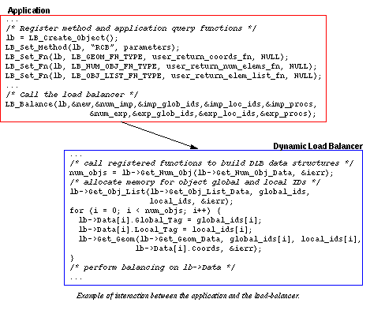
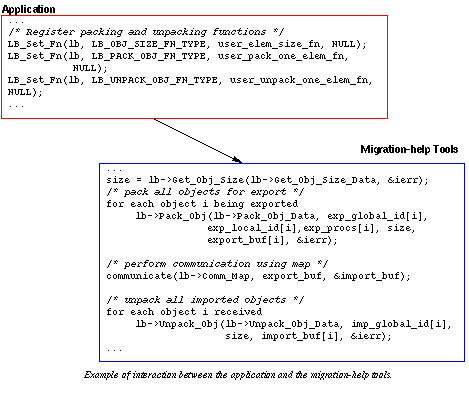

Introduction
Over the past decade, the use of parallel computing to solve large-scale
scientific problems has grown immensely. Many traditional numerical methods,
such as finite difference and finite element methods, have been shown to
be effective and efficient in parallel computing environments; see [Attaway
et al.] and [Devine et al.]
for two examples. They have typically been implemented in an MIMD fashion,
with portions of the problem domain being assigned uniquely to individual
processors. This static decomposition of the domain is done as a pre-processing
step to the actual computation either by the application itself or by some
static partitioning tool such as Chaco,
Metis, or Jostle.
As the desire for simulations with greater complexity and resolution arises,
new numerical schemes have been developed, such as adaptive numerical methods,
multiphysics simulations, and adaptive physics models. In these applications,
the amount of work per processor can vary over time. For example, in adaptive
finite element methods, the number of degrees of freedom within a processor
can increase or decrease as the method requires greater or lower accuracy
in a region of the problem domain. The changing processor work-loads make
a static decomposition of the domain insufficient; a dynamic load-balancing
strategy is needed to readjust work- loads as the computation proceeds.Several
important differences exist between static and dynamic load-balancing strategies.
Dynamic strategies are complicated by the fact that they must be implemented
in parallel without interfering with the scalability of the application.
Thus, they must use little memory and execute quickly. Also because they
run side-by-side with an application, dynamic strategies must use a subroutine
interface, rather than the file-based interface used by most static partitioners.
Additionally, dynamic load-balancing algorithms should be "incremental";
that is, small changes in the processor work loads should produce only
small changes in the decomposition so that little data movement is required
to establish the new decomposition. Most static decomposition strategies
do not explicitly enforce this incremental property; good dynamic strategies
must either implicitly or explicitly enforce it.In the past, most dynamic
load-balancing strategies have been implemented on a case-by-case basis
within application programs. Typically, a single strategy was implemented
in an application, relying heavily upon the data structures of the particular
application. This approach has two disadvantages. First, because its implementation
relies heavily upon a single application, the load-balancing algorithm
is not easily re-used by other applications. Second, because the application
developer is usually interested more in the physics of the simulation than
in the performance of dynamic load-balancing algorithms, only one algorithm
is implemented and comparisons to other load-balancing methods are not
performed to find, perhaps, a more effective strategy. See [Hendrickson
and Devine] for a more thorough discussion of these issues.
The goal of the Zoltan Dynamic Load-Balancing Library project is to
provide application developers a general-purpose dynamic load-balancing
tool that can be easily used by a variety of applications. The library
consists of several different dynamic load-balancing algorithms and is
designed so that new algorithms can easily be added to the library. An
object-oriented library interface separates the data structures of the
load-balancing routines from those of the application. The library's routines
gather information (such as lists of objects to be balanced, their weights,
and their coordinates) from the application through a series of query functions.
These simple query functions must be provided by the application and "registered"
with the library. In this manner, the library never directly accesses the
application's data structures. Use of the library in a different application
requires only that the new application supply its own set of query functions
to the load-balancing library. Once the appropriate query functions are
registered with the load-balancing library, the application can easily
select from a number of load-balancing algorithms and invoke load balancing
at the appropriate places in its computation. While some extra memory and
function-call overhead is required by this call-back protocol, the generality
and ease of use of the library obtained by it is well justified.
The Zoltan library consists of two parts: dynamic load-balancing tools
that compute new decompositions based on current processor work loads,
and migration-help tools that perform the communication needed to move
data to establish a new decomposition. Each set of tools is described below.
Load-Balancing Tools
Within the Zoltan library, many algorithms for dynamically determining
new processor decompositions can be implemented. Information needed by
the algorithms is obtained through queries to the application's data structures
using application defined and registered query routines. Query routines
provided include both geometric queries (supplying information such as
coordinates for objects) and graph-based queries (supplying such information
as edge lists for objects in the communication graph of the computation).
Capability for tree-based algorithms, using, say, the refinement tree of
an adaptive mesh-refinement application, will be added in the future.A
typical interaction between an application and the dynamic load-balancing
tools is shown in the figure below. Through
a call to LB_Create_Object,
the application creates a load-balancing object, which is storage space
to hold pointers to registered functions and load-balancing data. This
object is passed to a number of load-balancing functions. The application
then selects a load-balancing method to be used (Recursive Coordination
Bisection, "RCB," in the example) through a call to LB_Set_Method.
Several query functions needed by the RCB algorithm are registered through
calls to LB_Set_Fn.
These query functions include application-defined functions to return the
number of objects on the processor (user_return_num_elems_fn), a
list of the objects (user_return_elem_list_fn), and the coordinates
for a given object (user_return_coords_fn). After some computation,
the application calls LB_Balance
to compute a new decomposition on the processors.The load-balancing library
then follows pointers to the registered query functions to build the data
structures needed for the RCB algorithm. An array of data is built, with
one entry for each object owned by the processor. The number of objects
is determined by following the Get_Num_Obj pointer to the user_return_num_elems_fn.
Storage is allocated for the objects, and lists of the objects' identification
numbers are obtained by following the Get_Obj_List function pointer
to the user_return_elem_list_fn. Then, for each object, the object's
coordinates are obtained through calls through the Get_Geom function
pointer to the registered function user_return_coords_fn. Once the
data structures are built, the load-balancing library can perform the RCB
decomposition and return arrays of information describing the new decomposition
to the application.

Migration-Help Tools
Data migration is, unfortunately, an extremely application-dependent part
of establishing new decompositions. It involves gathering objects from
the data structures on one processor, sending those objects to a new processor,
inserting the objects into the new processor's data structures, and removing
the objects from the original processor. In addition, auxiliary data may
have to be sent to the new processor to support the objects migrated there.
For example, in a finite element application, the "objects" used in load
balancing may be elements. But when elements are migrated to new processors,
the nodes associated with those elements must also be sent to the new processors,
increasing the dependence of data migration on the application.A general-purpose
load-balancing library can not perform all the operations required for
data migration in all applications. However, it can assist an application
with the communication required for data migration. As a result of the
load-balancing algorithm, the library knows where data must be sent to
establish the new decomposition and can perform all needed communication
using communication tools within the library. The application, then, must
specify how to gather data associated with migrating objects and how to
insert that data into the new processor's data structures. Following the
registered query-function design of the dynamic load-balancing tools, migration-help
tools can then be provided to the application. An example of the interaction
between the application and the migration-help tools is shown in the figure
below. The application registers three additional query functions: a function
that returns the size (in bytes) of the data buffer needed to gather all
of one object's data (user_elem_size_fn), a function that packs
one object's data into a buffer (user_pack_one_elem_fn), and a function
that unpacks one object's data and inserts it into the new processor's
data structure (user_unpack_one_elem_fn).The migration-help tools
then use these registered functions with the results of the load-balancing
algorithm to move data between processors. The migration-help tools follow
the Get_Obj_Data_Size function pointer to user_elem_size_fn
to obtain the size of the data buffer needed for an object's data. They
allocate appropriately sized import and export buffers. Through repeated
calls to the Pack_Object function (user_pack_one_elem_fn),
the migration-help tools fill the export buffer with data for each object
to be exported. The migration-help tools then send the export buffer data
to other processors and receive import data from other processors. Then,
for each object imported, the migration help tools call the registered
Unpack_Object function (user_unpack_one_elem_fn) to unpack
the data from the import buffer and insert it in the processor's data structure.
Under this model, the application developer does not have to implement
addition communication routines to perform data migration; the migration-help
tools handle all communication required for data movement.

The migration-help tools are separate modules from the dynamic load-balancing
tools. Thus, an application does not have to use the migration-help tools
even though it uses the dynamic load-balancing tools to compute a new decomposition.
If the application has its own migration routines, it can use them in conjunction
with the load-balancing routines in the load-balancing library.
[Table of Contents |
Next: Using the Library |
Previous: Table of Contents]